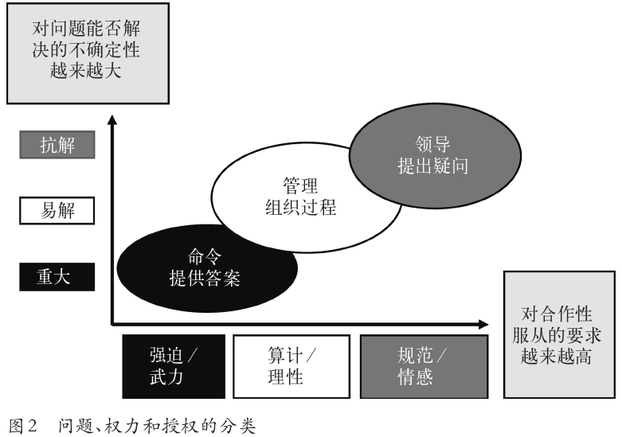
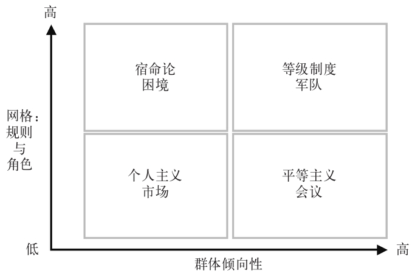
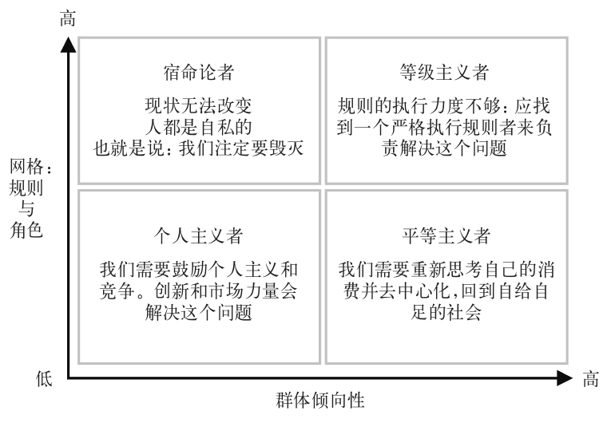
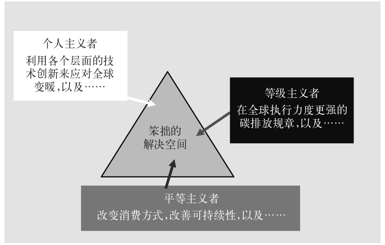
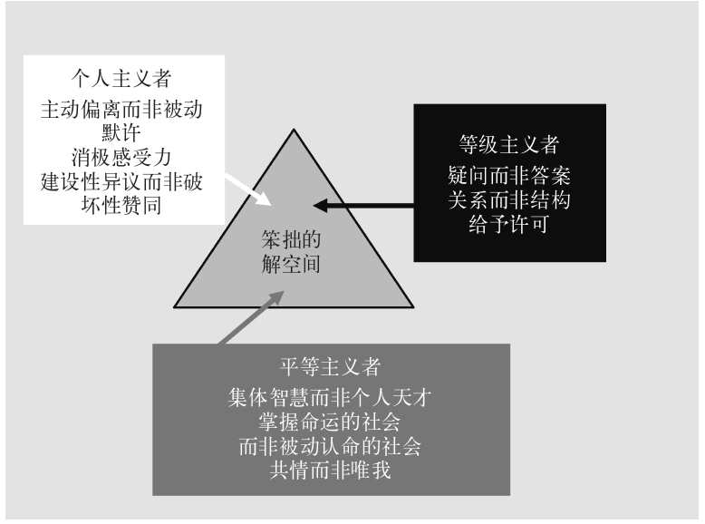

正如第一章中所指出的，我们对领导力的定义很可能迥然不同，那么又该如何区分领导与管理？本章提出了一个区分的方法。领导力研究领域的大量著述都建立在这样一个分类方法上，即以权限也就是合法权力的不同形式来区分领导与管理，认为领导往往涉及的时间较长，代表更为战略性的视角，并要求解决新问题。换句话说，其区分在一定程度上根源于情境：管理相当于似曾相识（以前见过），而领导相当于初次邂逅（从未遇见）。如果可以这样区分，那么管理者就必须启动必要的程序——标准作业程序——来解决上一次出现过并已有经验解决的问题。相反，领导者就必须促成相关各方为前所未见或难以对付的问题制定一个创新的应对方式。
既然管理和领导是两种不同的授权方式，根源于确定性和不确定性之间的差异，那么也可以把它们与里特尔和韦伯 [8] 关于“易解”和“抗解”问题的分类法联系起来。易解问题可能很复杂，但它们可以通过单线行为得以解决，且有可能曾经出现过。换句话说，其不确定性的程度有限，因此与管理有关。易解问题有点像谜语——每个谜语都必有答案。因此，（科学）管理者的职责，就是提出适当的过程来解决问题。具体实例包括制定铁路时刻表、建立核电站、军训或计划心脏手术等。
抗解问题不但难以理解，而且纷繁芜杂，也就是说，我们无法将其从环境中剥离、单独解决之后再还原复位，而对环境没有任何影响。此外，不存在明确的因果关系。这类问题往往非常棘手。例如，如果试图基于科学方法（也就是说，假设它是个易解问题）建立国家医疗服务体系（NHS），就可能会提议仅根据每个人的医疗需求为其提供所需的一切服务和药品。然而随着人口老龄化加深、干预和维持生命的医学手段越来越强大、为这些干预供资的财政资源越来越紧缺，我们可能会面临需求无限增加而经济资源水平有限的境况，所以对NHS这个问题，就不可能有一个科学或医学的，也就是易解的解决方案。简言之，我们无法满足每个人的一切需求，在某些时刻，我们需要就谁获得什么及基于何种标准来做出政治上的决策。这一固有的争议领域是抗解问题的典型特征。如果把NHS当成NIS（国家疾病服务体系）来考虑，我们对问题的理解就会截然不同，因为它基本上是一连串易解问题：治疗腿部骨折相当于一个易解问题——有科学的解决方案，医院里也有医疗专业人士来提供治疗。但是如果你跑到（不好意思，一瘸一拐地跛行到）饭馆里去治疗断腿，它就变成了一个抗解问题，因为那里不大可能有人会拥有必要的知识或资源。因此问题的分类是主观的而不是客观的——我们面临的是哪一种问题取决于我们所处的位置，拥有什么样的知识。
更有甚者，NHS处理的许多问题——肥胖症、药物滥用、暴力等——都不仅仅是医疗卫生问题，它们往往是非常复杂的社会问题，涉及不同的政府部门和机构，因此试图通过建立单一的机构框架来解决它们几乎注定无果。的确，由于抗解问题往往没有“结束点”，也就是问题最终得到解决的那个点（比方说，因为我们解决了犯罪问题，从此就没有犯罪了），我们往往不得不承认，我们根本无法解决抗解问题。关于领导力，我们的传统理解恰恰相反——解决问题、果断行动且应付自如的能力。但我们不可能知道如何解决抗解问题，那么正因为我们无法知道该如何应付，果断行动就得非常审慎才行。如果我们知道该如何应付，它就是一个易解问题而不是抗解问题了。然而外界要求果断行动的压力往往会导致我们试图按照处理易解问题的方式来解决问题。当全球变暖首次作为问题出现时，有些应对方式就集中关注通过科学来解决（这是一个易解反应），表现为发展生物燃料；但我们现在知道，第一代生物燃料似乎破坏了世界上很多重要的食物资源，因此貌似解决方案的应对实际上却变成了一个新问题。同样，这也是我们在试图解决抗解问题时经常碰到的——会出现其他问题，让原始问题变得更加复杂难解。于是我们可能使情况有所改善或更加恶化——我们可以开车开得慢一些、少一些或者开得快一些、多一些——但可能无法解决全球变暖问题，我们或许不得不学会生活在一个不同于以往的世界，随遇而安、尽力而为。换句话说，我们无法从头再来，设计一个完美的未来——虽然很多政治或宗教极端主义者或许希望如此。
这里的“我们”一词非常重要，因为它表明在应对抗解问题时，集体的重要作用。易解问题或许会有个别的解决方案，也就是说个体可能知道该如何应付。但既然抗解问题的定义就包括领导者一方无法提供答案，那么理所当然，个体领导者只能提出适当的疑问，让集体参与到应对问题的尝试中来。换句话说，抗解问题需要将权限从个体转移到集体，因为只有集体参与，才有希望应对问题。抗解问题所涉的不确定性表明领导力并非科学而是一门艺术，正如我所定义的那样——是动员整个社会共同应对复杂的集体问题的艺术。
抗解问题的实例包括制定交通战略、应对全球变暖、直面反社会行为或建立国家医疗服务体系。抗解问题不一定源于比易解问题更长期的时间框架，因为如果迟迟不做决策，某个看似易解的议题可能会变成（临时性的）抗解问题。比方说，肯尼迪总统在古巴导弹危机中的行动，往往是基于向他的文职助理提一些需要时间考虑的疑问——虽然他的军事顾问总是施压，要求立即得到解答。如果肯尼迪接受了美国鹰派的建议，我们可能会看到这一抗解/易解二分法之外的第三类问题——“重大”问题，在这个例子中，很可能是一场核战争。
重大问题，也就是危机，其性质不言自明，由于决策和行动的时间大大压缩，往往会引发独裁。这里，至少就指挥官的行为而言，需要做些什么根本没有任何不确定性，因为指挥官的职责就是采取必要的决定性行动，也就是为问题提供答案，而不是启动有可能延迟决策的标准作业程序（管理），或提出疑问并寻求集体的协助（领导）。
我认为，在遇到此类转化为重大问题的危机时，我们的确需要神一样的决策者果断决绝地提供危机解决方案。既然我们总是奖赏那些善于应对危机的人（而忽视那些因为善于管理而很少出现危机的人），指挥官们很快就学会了如何找出（或者把局势重新设计为）危机。当然，指挥官私下里对于当前行动是否恰当，或者将局势解读为危机有无说服力可能并没有把握，但这种没有把握的一面很可能是追随者不容易看到的。具体实例包括发生重大火车相撞事故、核电站辐射泄漏、军事攻击、心脏病发作、工人罢工、失业或失去亲人，抑或类似“9·11”事件或伦敦“7·7”爆炸案等恐怖袭击之后的即时反应。
这三种权限——指挥、管理和领导——又以另一种方式表明，那些负责决策之人的作用分别是找到适当的解决方案、过程以及提出疑问来应对问题。我本意并非另外提出一个分类法，而是想提供一个启发性工具，帮助我们理解为什么负责决策之人的行动有时在其他人看起来根本无法理解。因此，我并不是说正确的决策过程取决于对局势做出正确的分析——那可能会产生一种决定论观念——而是说，决策者往往会基于一个有说服力的局势分析来证明其行动的合理性。简言之，问题的社会建构会证明动用某种特定的授权方式是否合理。
来看始于2008年的经济衰退期间公共财政状况的例子。很多国家都陷入了是否应该削减公共开支以及应该（最低限度地）保留哪些公共开支的争论中。的确如此，各路政客似乎都汲汲皇皇地想要夺过指挥官的佩剑，让浪费公众财政税收的公共部门挥霍者们吃点苦头。但这样做是本末倒置——问题的根源是挥霍的投资银行家，而不是节俭的公共部门雇员！此外，情况往往是，当获得授权的同一个人或群体对同一问题的认知或认定分别是重大问题、易解问题或抗解问题时，甚或同一问题本身在这三个类别之间跨界转变时，该个人或群体也会在命令、管理和领导这三个角色之间转换。的确，这一转换——往往被决策者的对手视为“前后矛盾”——至关重要，因为形势总是在变化，或者至少我们对形势的认知不会一成不变。要对问题进行有说服力的描述，部分取决于决策者能否获得特定形式的权力及其对某种权力的偏好，“领导”的讽刺意味恰在于此：它是所有做法中最难的，也是许多决策者试图不惜一切代价尽量避免的。
“权力”的概念表明，我们需要考虑对待权力的不同态度以及不同形式的权力如何与这一权限分类法相契合。考虑到当前的目的，最有用的是埃齐奥尼的服从分类法，分为强制性、算计性和规范性服从。强制性权力或武力与监狱或军队等“全控”机构有关；算计性服从与公司等“理性”机构有关；而规范性服从与基于共同价值观的机构或组织有关，例如俱乐部和行业协会等。这一服从分类法与上述问题分类法完美契合：重大问题往往需要强制性服从；易解问题需要算计性服从；而抗解问题需要规范性服从——你无法强迫他人跟你一起应对抗解问题，因为问题的性质本身就要求追随者必须从主观上愿意提供帮助。
这一分类法可以用纵轴和横轴的关系图来表示，如图2所示，纵轴表示对问题的解决方案——当权之人的行为——越来越没有把握，横轴表示解决问题所需的合作越来越多。

图2 问题、权力和授权的分类
这或许在许多人看来是不言自明的，但如果是这样的话，我们为什么始终无法引发这样的变化呢？要回答这个问题，我想先来谈谈文化理论，考察一些所谓的“简洁方案”。
玛丽·道格拉斯 [9] 指出，我们大致可以基于两个不同的标准来了解大多数文化：网格和群体。“网格”涉及某种文化中角色和规则的重要性——有些非常僵化，例如某个政府官僚体系，而有些则非常松散或开明，例如某个非正式的俱乐部。“群体”涉及群体在某个文化中的重要性——有些文化完全是围绕群体展开的，例如足球队，有些则更具个人倾向，如企业家聚会。如果把这些要点放在一个二乘二的矩阵中，就得到了图3。

图3 组织社会生活的四种基本方式
当某种文化既是“高网格”又是“高群体”，我们往往会看到僵化的等级制度，例如在军队中，跟群体相比，个体无关紧要。当某种文化有着“高群体”倾向而缺乏对规则和角色的关注，也就是“低网格”时，就能看到平等主义文化，范例是那些认为集体会议庄严神圣、寻求共识至为关键的组织。当“网格”较低，对“群体”也同样漠不关心时，我们往往会看到个人主义文化——这是创业企业家、理性选择以及热爱市场的政客们的乐土，对他们来说，任何集体或规则概念都是对效率和自由的毫无必要的约束。最后一类是宿命论者，其群体层面缺失，身处孤岛的个体认为自己受到了规则和角色力量的破坏。
如上定义，这些文化往往都能自圆其说，且在哲学意义上也条理连贯。换句话说，等级主义者通过等级主义的透镜看待世界，因而将问题理解为没有足够的规则，或者是群体或社会缺乏规则执行力度的表现。相反，面对同样的问题，平等主义者认为它与集体社会的软弱有关——它与规则没有多大关系，而更在于社会应该更加紧密地团结起来解决问题。个人主义者可不信这一套；问题（在他们看来）显然与个人有关——个人应该对自己的境遇负起更大的责任。而宿命论者则彻底放弃了，因为规则永远与他们作对，也没有群体能够帮助他们摆脱困境。
于是问题就变成了这些内在逻辑连贯的或简洁的理解世界的模式在解决重大问题或易解问题时都很有用，因为我们知道如何解决，以前的做法也都奏效。个人主义者可以解决减少汽车的一氧化碳排放问题——这是个易解问题，有科学的解决方案；但他们无法解决全球变暖这个抗解问题。平等主义者可以帮助刑满释放犯回归社会——这是个易解问题；但他们无法消除犯罪——这是个抗解问题。等级主义者可以改善针对社会公务人员欺诈行为的规则执行力度——这是个易解问题；但他们无法解决贫困这个抗解问题。确实如此，抗解问题本身无法运用简洁的方式解决，恰恰是因为这些问题本来就不属于某种单一的文化和机构，而是跨越了好几种文化和机构。但因为我们囿于自身的文化偏好，对其痴迷不已，很难迈出自己的世界，以不同的视角来看待事物。诚如普鲁斯特所言：“真正的发现之旅不在于寻找新的风景，而在于拥有新的眼光。”
如果说单一模式（简洁）方案向来只能应对易解问题或重大问题，我们就需要考虑如何在所谓的笨拙解决方案中全部采纳三种应对方法。事实上，我们需要避开建筑师面对问题时的简洁做法——拿出一张白纸，设计全新的完美建筑——而采纳小修补匠，也就是自己动手的业余工匠的做法。用哲学家伊曼努尔·康德更直白的说法，我们一开始就需要认识到，“人性这根曲木，绝然造不出任何笔直的东西”。下面用全球变暖的例子来加以阐释。
图4总结了这个议题。等级主义者认为，问题的原因是缺乏足够的规则和执行力度——有必要制定类似《京都议定书》但更加有效的规则。然而平等主义者或许会辩称，需要改变和执行的并非规则，而是我们全体人类对地球的态度——我们必须找到更可持续的生活方式，而不仅仅是更严格地遵守规则。而在个人主义者看来，上述两个选项都未能正确理解问题，因而真正的解决方案是创造自由，鼓励企业家进行技术革新，拯救全人类。在宿命论者看来，一切当然毫无希望——我们注定要毁灭。这里的问题在于，上述简洁方案中没有一个真正产生了足够的多样性，用于应对这个复杂的问题。规则或许能促使人们安全驾驶，但靠它来拯救地球很可能于事无补。我们也无法干脆放弃资源集中的城市，大家都去乡间过自给自足的生活。同样，虽然技术革新很有必要，市场压力也不无助益，但仍然无法依靠这些来彻底解决问题。的确，全球变暖或许根本就无法解决，也就是说我们无法从头再来，恢复那个未经污染的世界，又因为寻找“解决方案”的不同切入点难免会危及不同的利益，我们只能寄希望于通过政治谈判达成协议，尽可能将损害限定在可控范围内。那就需要一种非线性的甚至“扭曲的”应对之策，缝合出一个谈不上简洁甚至还很笨拙的解决方案，将上述三种理解方式结合在一起，并适当采纳宿命论者的消极反应，顺从不断变化的公众意见和行动。如图5所示，我们事实上需要通过创造出一个“笨拙的解决空间”，利用全部三种框架，才能有所进展。

图4 应对全球变暖的简洁（单一模式）方案
那么，笨拙的解决方案到底应该是什么样子的呢？图6表明，一个必然笨拙的解决方案有一个必不可少的元素，就是把三种文化类型的元素结合起来，即个人主义者、平等主义者和等级主义者。在这三种类型的每一种内部都有一些技巧，一旦结合，或许能够为抗解问题撬开一个足够大的缝隙，实现些许进步。以下先逐一探讨这些类型，在此过程中我们需要认识到，每个抗解问题都可能与众不同，要有针对性地对技巧和议题加以组合，才有可能成功。换句话说，这不是个保证解决问题的“按图索骥”的做法，而是一种实验艺术形式，可能行之有效，也可能无济于事。

图5 应对全球变暖这一抗解问题的笨拙解决方案

图6 应对抗解问题的笨拙方法
这里的第一步，是等级主义者要认识到，领导者的角色必须从提供答案转变为提出疑问。这样一来，领导者就应该发起一个完全不同的叙述框架，让集体做好共同承担责任的准备。的确，之所以要在等级主义者阵营内部这么做，恰恰是因为只有等级制度的领导者才有权限逆转自己的角色，从贡献答案的人变成提出疑问的人。从专家转为调查者，与这一视角转变相关的要求对等级主义者最合适不过了：关系而非结构。
传统上，变革的模式暗示着，如果采取了某种模式却仍然失败了，一定是因为领导者未能以正确的顺序拉动适当的杠杆。但这一机器隐喻恰恰是领导者如此难以改变现状的原因——因为权力不是可以据为己有的东西，因而没有杠杆可以拉动。权力是一种关系，变革取决于领导者与追随者之间的关系：事实上，真正开启或结束变革战略的是追随者而不单是领导者，因为组织是体系而非机器。
正式领导者的传统权限一直都大大抑制了追随者的行动自由：除非老板亲口告诉你现在要集思广益，欢迎就工作议题提出不同意见，并继而让你亲眼看到他没有约束那些提出建设性异议之人，否则就不大可能会有多少辩论，下属们会任由组织溃败，因为他们没有获得拯救老板的许可。这就是为什么在笨拙方法中，等级主义者不可或缺，因为他们必须授权对规则加以改变。
个人主义者往往是那些偏离规则的人，这一行为可能至关重要。举例来说，1990年，杰里和莫妮克·斯捷尔宁 [10] 前往越南参加救助儿童会的慈善活动。让斯捷尔宁夫妇觉得奇怪的是，在普遍营养不良的情况下，为什么有些孩子营养良好？关于营养不良，主流越南文化形成了相当主流的传统智慧——它是卫生条件差、食品分配不到位、贫困和饮水资源短缺共同作用的结果。另一方面，有些孩子——并非社会阶层最高的人家的孩子——营养良好，是因为他们的母亲——主动偏离者——无视传统文化；传统文化认为母亲应该：
相反，这些母亲：
简言之，组织内的问题常常是自发产生的，但一般也都有解决方案，只不过我们通常不去寻找它们罢了。
等级主义者往往无法接受模棱两可，个人主义者却甘之如饴。诗人济慈所谓的“消极感受力”是指能够忍受不确定性，而抗解问题注定是不确定和模棱两可的，因此真正的技能并非消除不确定性，而是设法在充满不确定性的情况下仍高效运作。简言之，消极感受力能够为人们腾挪出时间和空间来思考当前议题，而并非不得不满足其他人的日程或必须果断决绝——却铸成大错。斯坦曾对“阿波罗13号” [11] 太空任务和三里岛核事故 [12] 中的决策进行过比较，能够很好地说明问题，即在某些充满压力的情况下，经验的助益必不可少。因此发生在阿波罗13号和三里岛的“重大转折事件”——当“世界看似不再是一个理性有序的系统”时——就促使负责决策的人做出了全然不同的反应。阿波罗13号的“重大转折事件”爆炸使宇航员面临食物短缺、氧气不足、体力不支、饮用水不够和生还希望渺茫的境况。但地勤人员没有顺从直接蹦出结论的天然倾向，而是对问题进行了缓慢而仔细的分析，通过制作一个临时的二氧化碳涤气器（这是典型的小修补匠的做法），使得阿波罗13号安全返回地球。相反，在1979年的三里岛核灾难中，“重大转折事件”的发生使他们立即采取行动，不经意地造成了局势进一步恶化。实际上，决策者的确果断，却做出了错误的决策，让情况变得更糟的是，后来所有表明问题尚未解决的证据都遭到了他们的否认。因此，在这类情形下，能够容忍焦虑并确保它既不会升级（导致绝望）也不会被否认（导致不作为），能够产生不同的意义建构行动。
最后，个人主义者善于抵御等级主义者和平等主义者发出的服从诱惑，无论是服从规则还是服从众意。自米尔格拉姆和津巴多 [13] 1960年代著名的服从实验以来，我们知道，大多数人在大多数时候都会服从权威，即便那会导致无辜的第三方受苦——只要追随者接受其理论依据、能够免责，而且他们只是逐渐地、一点一点地施加痛苦（“造成损害”）。换句话说，面对抗解问题时，领导者的难题不是确保有人赞同而是确保有人提出异议。对独裁者来说，获得赞同相对比较容易，但它无法应对抗解问题，因为这类赞同往往是破坏性的，而破坏性赞同恰与不负责任的追随相伴，将导致全然无用的框架，根本无益于应对抗解问题。我们事实上需要的是建设性的反对者，他们愿意告诉老板，后者的决策是错误的（举例来说，就像在第二次世界大战中，艾伦·布鲁克陆军元帅频频对丘吉尔提出批评）。那么平等主义者又如何——需要他们贡献些什么呢？
一般来说，我们会把成败都归于个别领导者。事实上，成功或失败越重大，我们越有可能这么做，即便我们通常并没有什么证据表明事件的发展与个体有关。然而当我们真正考察成败的原因时，会发现它往往是社会行动而非个体行动的结果。例如，英国零售企业家阿奇·诺曼曾在1991年把阿斯达公司从破产边缘挽救回来，在1999年以67亿英镑的价格把它卖给了沃尔玛公司。但在这一重大成功背后，并非某个天才的个人努力，而是一个才能出众的团队共同作战，包括董事会级别的贾斯汀·金（后来就任英伯瑞公司CEO）、理查德·贝克（后来就任博姿公司CEO）、安迪·霍恩比（后来担任哈利法克斯苏格兰银行CEO，继而又入主博姿公司），以及艾伦·莱顿（后来出任皇家邮政的董事长）。简言之，阿斯达的成功是集体智慧而非个人天才的结果。这一视角对抗解问题尤其重要，因为它们要求集体反应，这是系统而非个人的典型特征——必须由大家共同承担责任，而不是错误地让领导者一力担当。
英国兰莱斯特郡布朗斯通的当地社区领导者安·格洛弗因为把自己所在的被动认命的社区转变为“掌握命运的社区”而受到赞誉，她动员邻里团结起来对抗一伙从事反社会行为、用恐怖控制为害一方的年轻人。恐怖蔓延曾一度让社区失去活力，把它变成了由孤立个体组成的一盘散沙——被动认命的社区——每个人都在抱怨流氓青年的问题，但都无能为力。当格洛弗说服一大群人团结起来走出家门去面对那伙流氓时，流氓组织就离开了，其成员也最终被清除出乡里。这一实例自然证明我们应该勇敢行动，并愿意承担面对困难的风险，但还不止这些；它说明我们要认识到，必须积聚社会资本来培养一种集体归属感，才能建立一个掌握命运的社区。
最后一个平等主义技巧是能够站在他人的立场上，建立共情，从而理解他人，这是应对抗解问题的前提之一，但如何获得这一技巧呢？琼斯的答案是成为你所在组织中的人类学家，投入一些时间和精力去站在自己追随者的立场上，体验一下那些你希望投身于集体事业之人的生活，因为如果你无法理解他们看待问题的视角，又如何能够动员他们呢？这与我们通常获得组织运作知识的方法截然不同，因为我们知道，人们在小组访谈或问卷调查中所说的话并不能反映他们真实的世界观。许多CEO和公司领导者已经开始采用定期前往生产第一线工作一段时间的做法，但很多人还没有，于是当等级制度底层对问题的反应与小组访谈或最新员工调查问卷的预测不一致时，会让他们措手不及。
很多当代议题之复杂，似乎都能够证明这一从易解问题和简洁方案转变为笨拙方案的做法更适合应对抗解问题。但事实上有很多议题都是易解而非抗解问题，确切地说大多数议题都是如此，只需要人们恪守本分即可，不需要老板伸长手臂，事事亲力亲为。真正的危险在于，我们已经变成了自己文化偏好的囚徒——等级主义者对发号施令上瘾，平等主义者沉迷于合作型领导，个人主义者坚持把一切问题都当作易解问题来处理。我们本该在自己的方法被证明无效时培养一种笨拙的做法，结果却一味地寻求简洁方案。这或许也能解释为何变革如此举步维艰——因为，比方说，当公共部门组织与合作伙伴共同应对酗酒或反社会行为等抗解问题时，合作伙伴们无法（或拒绝）授权彼此来牵头行动。同样，当各个国家试图解决类似全球变暖这样的全球性问题时，同一种平等主义抑制力量也往往会妨碍进步。要重新思考我们的做法，一种方法是认识到等级主义者也可以发挥作用：合作型领导也需要有人来牵头。正如人们在加利福尼亚州看到的，如果需要绝大多数投票表决增加公共开支，而只需要三分之二多数的立法者表决增加税收（或制定预算）时，有时你会发现平等主义者太多、太碍事了。但自古以来一直如此吗？领导者曾经的领导方式是否全然不同？下一章就来回答这些问题。